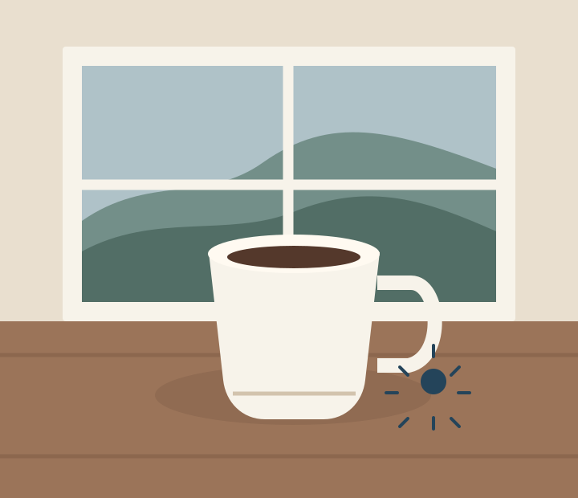

COFFEE · PAUSE · EVERYDAY
在熟悉的香氣裡，找到自己的生活節奏。
讓風味，在藍天下慢慢沉澱。

A LITTLE PAUSE
黑軌咖啡相信，一杯咖啡不必匆忙。從選豆、烘焙到一個自在的座位，讓每個人都能用自己的步調，享受咖啡帶來的片刻休息。
OUR EVERYDAY CRAFT
細細挑選風味合宜的咖啡豆，讓每一杯都有自己的個性。
留意香氣與口感的變化，呈現咖啡豆舒服而平衡的風味。
用溫暖簡潔的環境，迎接一個人或與朋友相聚的時光。
TAKE YOUR TIME